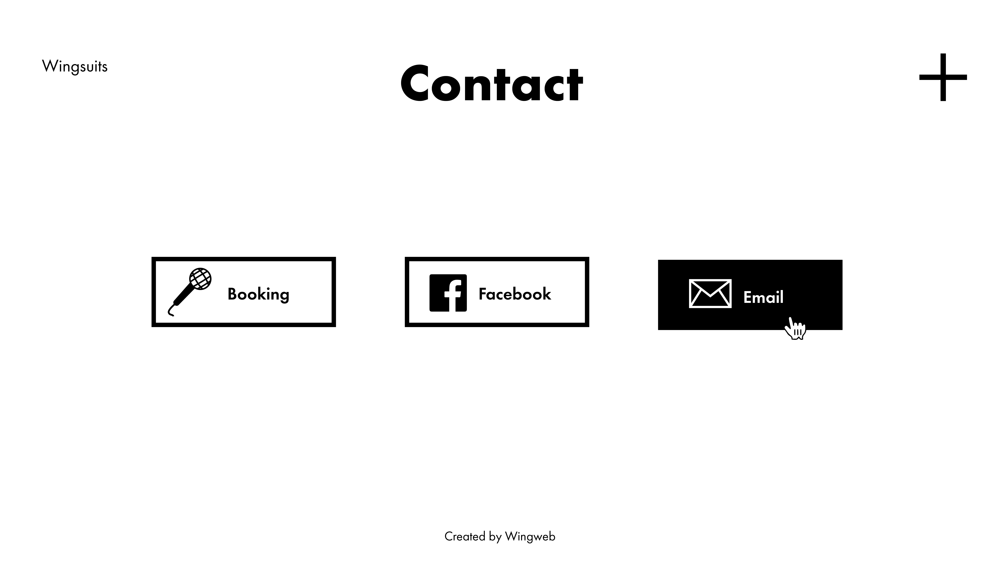

Our Client
- Client Name: Wingsuits (band)
- Contact Person: Jørgen Thorsnes

Purpose, Goals and Audience
The site’s purpose is to convey information about the band Wingsuits. The band wishes to be acknowledged internationally, meaning the site will be written in English. The band want the website to promote and inform about concerts, themselves, their music, and also present images and music videos. They also want the website to display and promote merchandise. The goal will be to make the visitors want to listen to Wingsuits' music, make the visitors interested in getting to know the band, and promote what they have to offer.
There are two main groups within the websites audience. One group of the audience are the people who are interested in knowing more about Wingsuits, especially people who wants to go to their concerts. Their main fan base are students in ages 19-30 who enjoys new pop/indie/rock music, so the website must be aimed especially at this audience. Another part of the audience is booking-agents and concert-arrangers who want to discover new bands and get in contact with Wingsuits. This should also be taken into consideration when designing the website, and could possibly collide with the other main audience group. Wingsuits also wants to reach out internationally, so the audience can be people from all over the globe.
Navigation Structure
***A BRIEF DESCRIPTION OF THE SITES NAVIGATIONAL STRUCTURE***
***GRAPH OF WHICH PAGES CONNECT WHERE***
Page layout and apperance
***DESCRIPTION OF THE UNIVERSAL DESIGN (CSS)***
***FILL WITH TEXT***

***ADD A PHOTO OF THE UNIVERSAL DESIGN***
- font
- color-scheme
- navbar-position and apperance
- banner
- footer
- social icons bar
- background images
- **Describe the above with text
- **Describe how this universal design meet the requirements of the website
Content of the Website and Organization
Homepage - index.html
A homepage where the band is shortly presented with their logo and a music video. It is important for our stakeholder that the homepage looks visually intriguing, and that it easily gives the visitors a feeling of what kind of band Wingsuits is. The homepage will be our index.html. The visitor will also be guided to further exploration of the website by a menu with links to all the other webpages.
About the band - about.html
About is a biographic section about Wingsuits. This section will cover their story as a band, how they came together to form the band, and some stories from band members. Our client also wanted us to make a gallery containing photos from concerts and photos that the band has taken on tour. The idea of this webpage is that it should appeal more to the visitors that already are huge fans of Wingsuits.

Tour dates - tourdates.html
This section should is going to contain information about all of Wingsuits’ upcoming concerts, as well as an archive of previous concerts. Also, the client wants to have links to concert tickets for the upcoming concerts so that the visitors can buy a concert ticket in as few steps as possible.

Merchandise - merchandise.html
This section should display all the current merchandise that is possible to buy from the band, as well as pictures of items that are sold out. The actual webshop will be located on some other site, i.e. Bandcamp or something similar, so we will provide links to the web shop.
An important aspect of both the merchandise and the tour dates pages are that they should look uniform, even though the web shops and the ticket selling companies are completely different in design.

Our music - music.html
This is going to be a page with links to songs and music videos in Spotify/Itunes/Tidal/YouTube. As much as possible, the content should be embedded from the different platforms.

Contact - contact.html
There should of course be a section for contacting the band. Our client wants a simple Contact section, only containing options to contact Wingsuits by e-mail and Facebook.
Minimum requirements - Javascript implementations
- Picture gallery with slideshow option, create with Javascript
- Name will be in charge of implementing this
- Menu, create with Javascript
- Name will be in charge of implementing this
- Hover-animations, create with Javascript
- Name will be in charge of implementing this
- Wingsuits-man flying man (easteregg), create with Javascript
- Name will be in charge of implementing this

Plan
Info about what comes here
Organizational scheme
list of folders and files
- index.html
- about.html
- tourdates.html
- merchandise.html
- music.html
- contact.html
- images/
- image1
- image2
- css/
- style.css
- scripts/
- picturegallery.js
- menu.js
- hover.js
- wingsuitman.js
Work Division and Deadlines
| Filename | Description | In charge | Deadline |
|---|---|---|---|
| asd | asd | asd | asd |
| asd | asd | asd | asd |
| asd | asd | asd | asd |
| asd | asd | asd | asd |